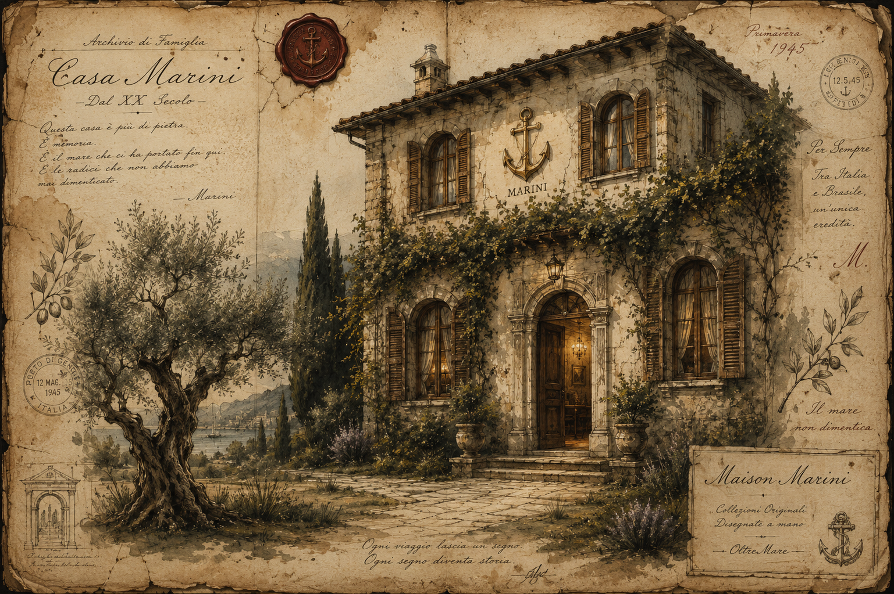

Linea Mare
Mapas náuticos, couro envelhecido, silêncio marítimo e herança italiana.
Esplora la Stanza
Uma maison italiana redescoberta através de desenhos, memórias e objetos feitos para atravessar o tempo.
Maison Marini existe como um arquivo emocional italiano. Cada coleção nasce como se tivesse sido desenhada à mão dentro de um caderno preservado por gerações.
Papel envelhecido, lápis, aquarela e silêncio fazem parte da experiência.
“Luxury should feel discovered, not manufactured.”
Ambienti ispirati alla memoria italiana, ai viaggi marittimi e agli archivi dimenticati.
Mapas náuticos, couro envelhecido, silêncio marítimo e herança italiana.
Esplora la StanzaNavegação celeste, estrelas douradas e noites silenciosas italianas.
Esplora la StanzaTulipas aquareladas e arte inspirada em antigos cadernos italianos.
Esplora la StanzaMáscaras venezianas, silêncio e presença dramática.
Esplora la StanzaA peça principal da Maison Marini nasce da ideia de permanência. Não como tendência, mas como objeto destinado a atravessar gerações.